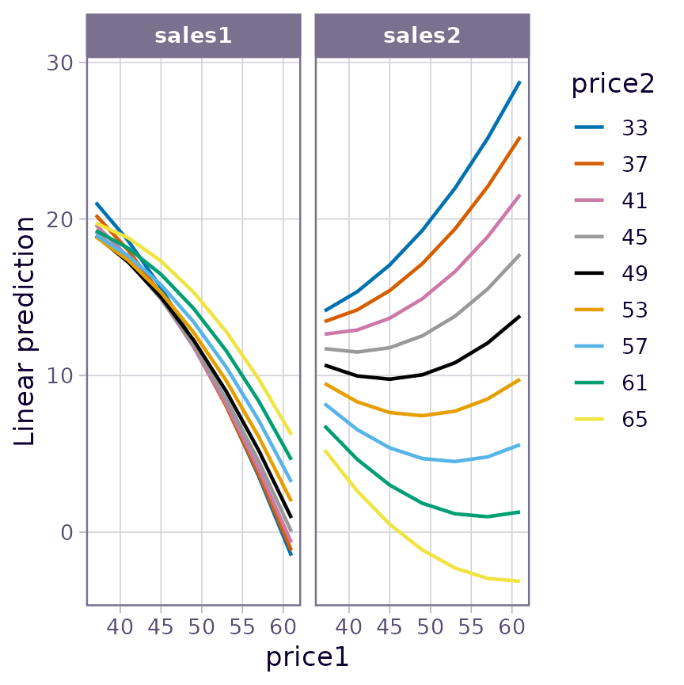

Interaction analysis in emmeans
emmeans package, Version 1.10.6.90003
Source:vignettes/interactions.Rmd
interactions.RmdModels in which predictors interact seem to create a lot of confusion concerning what kinds of post hoc methods should be used. It is hoped that this vignette will be helpful in shedding some light on how to use the emmeans package effectively in such situations.
Contents
Interacting factors
As an example for this topic, consider the auto.noise
dataset included with the package. This is a balanced 3x2x2 experiment
with three replications. The response – noise level – is evaluated with
different sizes of cars, types of anti-pollution filters, on each side
of the car being measured.1
Let’s fit a model and obtain the ANOVA table (because of the scale of the data, we believe that the response is recorded in tenths of decibels; so we compensate for this by scaling the response):
## Analysis of Variance Table
##
## Response: noise/10
## Df Sum Sq Mean Sq F value Pr(>F)
## size 2 260.514 130.257 893.1905 < 2.2e-16
## type 1 10.562 10.562 72.4286 1.038e-08
## side 1 0.007 0.007 0.0476 0.8291042
## size:type 2 8.042 4.021 27.5714 6.048e-07
## size:side 2 12.931 6.465 44.3333 8.730e-09
## type:side 1 0.174 0.174 1.1905 0.2860667
## size:type:side 2 3.014 1.507 10.3333 0.0005791
## Residuals 24 3.500 0.146There are statistically strong 2- and 3-way interactions.
One mistake that a lot of people seem to make is to proceed too hastily to estimating marginal means (even in the face of all these interactions!). They would go straight to analyses like this:
emmeans(noise.lm, pairwise ~ size)## NOTE: Results may be misleading due to involvement in interactions## $emmeans
## size emmean SE df lower.CL upper.CL
## S 82.42 0.11 24 82.19 82.64
## M 83.38 0.11 24 83.15 83.60
## L 77.25 0.11 24 77.02 77.48
##
## Results are averaged over the levels of: type, side
## Confidence level used: 0.95
##
## $contrasts
## contrast estimate SE df t.ratio p.value
## S - M -0.958 0.156 24 -6.147 <.0001
## S - L 5.167 0.156 24 33.140 <.0001
## M - L 6.125 0.156 24 39.287 <.0001
##
## Results are averaged over the levels of: type, side
## P value adjustment: tukey method for comparing a family of 3 estimatesThe analyst-in-a-hurry would thus conclude that the noise level is higher for medium-sized cars than for small or large ones.
But as is seen in the message before the output,
emmeans() valiantly tries to warn you that it may not be a
good idea to average over factors that interact with the factor of
interest. It isn’t always a bad idea to do this, but sometimes
it definitely is.
What about this time? I think a good first step is always to try to visualize the nature of the interactions before doing any statistical comparisons. The following plot helps.
emmip(noise.lm, type ~ size | side)Examining this plot, we see that the “medium” mean is not always
higher; so the marginal means, and the way they compare, does not
represent what is always the case. Moreover, what is evident in the plot
is that the peak for medium-size cars occurs for only one of the two
filter types. So it seems more useful to do the comparisons of size
separately for each filter type. This is easily done, simply by
conditioning on type:
emm_s.t <- emmeans(noise.lm, pairwise ~ size | type)## NOTE: Results may be misleading due to involvement in interactions
emm_s.t## $emmeans
## type = Std:
## size emmean SE df lower.CL upper.CL
## S 82.58 0.156 24 82.26 82.91
## M 84.58 0.156 24 84.26 84.91
## L 77.50 0.156 24 77.18 77.82
##
## type = Octel:
## size emmean SE df lower.CL upper.CL
## S 82.25 0.156 24 81.93 82.57
## M 82.17 0.156 24 81.84 82.49
## L 77.00 0.156 24 76.68 77.32
##
## Results are averaged over the levels of: side
## Confidence level used: 0.95
##
## $contrasts
## type = Std:
## contrast estimate SE df t.ratio p.value
## S - M -2.0000 0.22 24 -9.071 <.0001
## S - L 5.0833 0.22 24 23.056 <.0001
## M - L 7.0833 0.22 24 32.127 <.0001
##
## type = Octel:
## contrast estimate SE df t.ratio p.value
## S - M 0.0833 0.22 24 0.378 0.9245
## S - L 5.2500 0.22 24 23.812 <.0001
## M - L 5.1667 0.22 24 23.434 <.0001
##
## Results are averaged over the levels of: side
## P value adjustment: tukey method for comparing a family of 3 estimatesNot too surprisingly, the statistical comparisons are all different for standard filters, but with Octel filters, there isn’t much of a difference between small and medium size.
For comparing the levels of other factors, similar judgments must be
made. It may help to construct other interaction plots with the factors
in different roles. In my opinion, almost all meaningful statistical
analysis should be grounded in evaluating the practical impact of the
estimated effects first, and seeing if the statistical evidence
backs it up. Those who put all their attention on how many asterisks (I
call these people “* gazers”) are ignoring the fact that
these don’t measure the sizes of the effects on a practical scale.2 An effect
can be practically negligible and still have a very small P
value – or practically important but have a large P value –
depending on sample size and error variance. Failure to describe what is
actually going on in the data is a failure to do an adequate analysis.
Use lots of plots, and think about the results. For more on
this, see the discussion of P values in the “basics” vignette.
Simple contrasts
An alternative way to specify conditional contrasts or comparisons is
through the use of the simple argument to
contrast() or pairs(), which amounts to
specifying which factors are not used as by
variables. For example, consider:
noise.emm <- emmeans(noise.lm, ~ size * side * type)Then pairs(noise.emm, simple = "size") is the same as
pairs(noise.emm, by = c("side", "type")).
One may specify a list for simple, in which case
separate runs are made with each element of the list. Thus,
pairs(noise.emm, simple = list("size", c("side", "type"))
returns two sets of contrasts: comparisons of size for each
combination of the other two factors; and comparisons of
side*type combinations for each size.
A shortcut that generates all simple main-effect comparisons is to
use simple = "each". In this example, the result is the
same as obtained using
simple = list("size", "side", "type").
Ordinarily, when simple is a list (or equal to
"each"), a list of contrast sets is returned. However, if
the additional argument combine is set to
TRUE, they are all combined into one family:
contrast(noise.emm, "consec", simple = "each", combine = TRUE, adjust = "mvt")## side type size contrast estimate SE df t.ratio p.value
## L Std . M - S 1.500 0.312 24 4.811 0.0011
## L Std . L - M -8.667 0.312 24 -27.795 <.0001
## R Std . M - S 2.500 0.312 24 8.018 <.0001
## R Std . L - M -5.500 0.312 24 -17.639 <.0001
## L Octel . M - S -0.333 0.312 24 -1.069 0.9769
## L Octel . L - M -5.667 0.312 24 -18.174 <.0001
## R Octel . M - S 0.167 0.312 24 0.535 0.9999
## R Octel . L - M -4.667 0.312 24 -14.967 <.0001
## . Std S R - L -1.833 0.312 24 -5.880 0.0001
## . Std M R - L -0.833 0.312 24 -2.673 0.1710
## . Std L R - L 2.333 0.312 24 7.483 <.0001
## . Octel S R - L -0.500 0.312 24 -1.604 0.7740
## . Octel M R - L 0.000 0.312 24 0.000 1.0000
## . Octel L R - L 1.000 0.312 24 3.207 0.0566
## L . S Octel - Std -1.000 0.312 24 -3.207 0.0562
## L . M Octel - Std -2.833 0.312 24 -9.087 <.0001
## L . L Octel - Std 0.167 0.312 24 0.535 0.9999
## R . S Octel - Std 0.333 0.312 24 1.069 0.9769
## R . M Octel - Std -2.000 0.312 24 -6.414 <.0001
## R . L Octel - Std -1.167 0.312 24 -3.742 0.0162
##
## P value adjustment: mvt method for 20 testsThe dots (.) in this result correspond to which simple
effect is being displayed. If we re-run this same call with
combine = FALSE or omitted, these twenty comparisons would
be displayed in three broad sets of contrasts, each broken down further
by combinations of by variables, each separately
multiplicity-adjusted (a total of 16 different tables).
Interaction contrasts
An interaction contrast is a contrast of contrasts. For instance, in
the auto-noise example, we may want to obtain the linear and quadratic
contrasts of size separately for each type,
and compare them. Here are estimates of those contrasts:
contrast(emm_s.t[[1]], "poly") ## 'by = "type"' already in previous result ## type = Std:
## contrast estimate SE df t.ratio p.value
## linear -5.08 0.220 24 -23.056 <.0001
## quadratic -9.08 0.382 24 -23.786 <.0001
##
## type = Octel:
## contrast estimate SE df t.ratio p.value
## linear -5.25 0.220 24 -23.812 <.0001
## quadratic -5.08 0.382 24 -13.311 <.0001
##
## Results are averaged over the levels of: sideThe comparison of these contrasts may be done using the
interaction argument in contrast() as
follows:
## size_poly type_consec estimate SE df t.ratio p.value
## linear Octel - Std -0.167 0.312 24 -0.535 0.5979
## quadratic Octel - Std 4.000 0.540 24 7.407 <.0001
##
## Results are averaged over the levels of: side(Using by = NULL restores type to a primary
factor in these contrasts.) The practical meaning of this is that there
isn’t a statistical difference in the linear trends, but the quadratic
trend for Octel is greater than for standard filter types. (Both
quadratic trends are negative, so in fact it is the standard filters
that have more pronounced downward curvature, as is seen in the
plot.) In case you need to understand more clearly what contrasts are
being estimated, the coef() method helps:
coef(IC_st)## size type c.1 c.2
## 1 S Std 1 -1
## 2 M Std 0 2
## 3 L Std -1 -1
## 4 S Octel -1 1
## 5 M Octel 0 -2
## 6 L Octel 1 1Note that the 4th through 6th contrast coefficients are the negatives of the 1st through 3rd – thus a comparison of two contrasts.
By the way, “type III” tests of interaction effects can be obtained via interaction contrasts:
test(IC_st, joint = TRUE)## df1 df2 F.ratio p.value
## 2 24 27.571 <.0001This result is exactly the same as the F test of
size:type in the anova output.
The three-way interaction may be explored via interaction contrasts too:
## size_poly type_consec side_consec estimate SE df t.ratio p.value
## linear Octel - Std R - L -2.67 0.624 24 -4.276 0.0003
## quadratic Octel - Std R - L -1.67 1.080 24 -1.543 0.1359One interpretation of this is that the comparison by
type of the linear contrasts for size is
different on the left side than on the right side; but the comparison of
that comparison of the quadratic contrasts, not so much. Refer again to
the plot, and this can be discerned as a comparison of the interaction
in the left panel versus the interaction in the right panel.
Finally, emmeans provides a
joint_tests() function that obtains and tests the
interaction contrasts for all effects in the model and compiles them in
one Type-III-ANOVA-like table:
joint_tests(noise.lm)## model term df1 df2 F.ratio p.value
## size 2 24 893.190 <.0001
## type 1 24 72.429 <.0001
## side 1 24 0.048 0.8291
## size:type 2 24 27.571 <.0001
## size:side 2 24 44.333 <.0001
## type:side 1 24 1.190 0.2861
## size:type:side 2 24 10.333 0.0006You may even add by variable(s) to obtain separate ANOVA
tables for the remaining factors:
joint_tests(noise.lm, by = "side")## side = L:
## model term df1 df2 F.ratio p.value
## size 2 24 651.714 <.0001
## type 1 24 46.095 <.0001
## size:type 2 24 23.524 <.0001
##
## side = R:
## model term df1 df2 F.ratio p.value
## size 2 24 285.810 <.0001
## type 1 24 27.524 <.0001
## size:type 2 24 14.381 0.0001Multivariate contrasts
In the preceding sections, the way we addressed interacting factors was to do comparisons or contrasts of some factors()) separately at levels of other factor(s). This leads to a lot of estimates and associated tests.
Another approach is to compare things in a multivariate way. In the
auto-noise example, for example, we have four means (corresponding to
the four combinations of type and size) with
each size of car, and we could consider comparing these sets of
means. Such multivariate comparisons can be done via the Mahalanobis
distance (a kind of standardized distance measure) between one set
of four means and another. This is facilitated by the
mvcontrast() function:
mvcontrast(noise.emm, "pairwise", mult.name = c("type", "side"))## contrast T.square df1 df2 F.ratio p.value
## S - M 88.857 4 21 19.438 <.0001
## S - L 1199.429 4 21 262.375 <.0001
## M - L 1638.000 4 21 358.312 <.0001
##
## P value adjustment: sidakIn this output, the T.square values are Hotelling’s
statistics, which are the squared Mahalanobis distances among the sets
of four means. These results thus accomplish a similar objective as the
initial comparisons presented in this vignette, but are not complicated
by the issue that the factors interact. (Instead, we lose the
directionality of the comparisons.) While all comparisons are
“significant,” the T.square values indicate that large cars
are statistically most different from the other sizes.
We may still break things down using by variables.
Suppose, for example, we wish to compare the two filter types for each
size of car, without regard to which side:
update(mvcontrast(noise.emm, "consec", mult.name = "side", by = "size"),
by = NULL)## contrast size T.square df1 df2 F.ratio p.value
## Octel - Std S 11.429 2 23 5.476 0.0113
## Octel - Std M 123.714 2 23 59.280 <.0001
## Octel - Std L 14.286 2 23 6.845 0.0047
##
## P value adjustment: sidakOne detail to note about multivariate comparisons: in order to make complete sense, all the factors involved must interact. Suppose we were to repeat the initial multivariate comparison after removing all interactions:
mvcontrast(update(noise.emm, submodel = ~ side + size + type),
"pairwise", mult.name = c("type", "side"))## contrast T.square df1 df2 F.ratio p.value
## S - M 37.786 1 24 37.786 <.0001
## S - L 1098.286 1 24 1098.286 <.0001
## M - L 1543.500 1 24 1543.500 <.0001
##
## P value adjustment: sidak
## NOTE: Some or all d.f. are reduced due to singularitiesNote that each
ratio now has 1 d.f. Also, note that T.square = F.ratio,
and you can verify that these values are equal to the squares of the
t.ratios in the initial example in this vignette
(,
etc.). That is, if we ignore all interactions, the multivariate tests
are exactly equivalent to the univariate tests of the marginal
means.
Interactions with covariates
When a covariate and a factor interact, we typically don’t want EMMs
themselves, but rather estimates of slopes of the covariate
trend for each level of the factor. As a simple example, consider the
fiber dataset, and fit a model including the interaction
between diameter (a covariate) and machine (a
factor):
fiber.lm <- lm(strength ~ diameter*machine, data = fiber)This model comprises fitting, for each machine, a separate linear
trend for strength versus diameter.
Accordingly, we can estimate and compare the slopes of those lines via
the emtrends() function:
emtrends(fiber.lm, pairwise ~ machine, var = "diameter")## $emtrends
## machine diameter.trend SE df lower.CL upper.CL
## A 1.104 0.194 9 0.666 1.54
## B 0.857 0.224 9 0.351 1.36
## C 0.864 0.208 9 0.394 1.33
##
## Confidence level used: 0.95
##
## $contrasts
## contrast estimate SE df t.ratio p.value
## A - B 0.24714 0.296 9 0.835 0.6919
## A - C 0.24008 0.284 9 0.845 0.6863
## B - C -0.00705 0.306 9 -0.023 0.9997
##
## P value adjustment: tukey method for comparing a family of 3 estimatesWe see the three slopes, but no two of them test as being statistically different.
To visualize the lines themselves, you may use
emmip(fiber.lm, machine ~ diameter, cov.reduce = range)The cov.reduce = range argument is passed to
ref_grid(); it is needed because by default, each covariate
is reduced to only one value (see the “basics”
vignette). Instead, we call the range() function to
obtain the minimum and maximum diameter.
For a more sophisticated example, consider the oranges
dataset included with the package. These data concern the sales of two
varieties of oranges. The prices (price1 and
price2) were experimentally varied in different stores and
different days, and the responses sales1 and
sales2 were observed. Let’s consider three multivariate
models for these data, with additive effects for days and stores, and
different levels of fitting on the prices:
org.quad <- lm(cbind(sales1, sales2) ~ poly(price1, price2, degree = 2)
+ day + store, data = oranges)
org.int <- lm(cbind(sales1, sales2) ~ price1 * price2 + day + store, data = oranges)
org.add <- lm(cbind(sales1, sales2) ~ price1 + price2 + day + store, data = oranges)Being a multivariate model, emmeans methods will
distinguish the responses as if they were levels of a factor, which we
will name “variety”. Moreover, separate effects are estimated for each
multivariate response, so there is an implied interaction
between variety and each of the predictors involving
price1 and price2. (In org.int,
there is an implied three-way interaction.) An interesting way to view
these models is to look at how they predict sales of each variety at
each observed values of the prices:
emmip(org.quad, price2 ~ price1 | variety, mult.name = "variety", cov.reduce = FALSE)## Warning: The shape palette can deal with a maximum of 6 discrete values because more
## than 6 becomes difficult to discriminate
## ℹ you have requested 9 values. Consider specifying shapes manually if you need
## that many have them.
The trends portrayed here are quite sensible: In the left panel, as
we increase the price of variety 1, sales of that variety will tend to
decrease – and the decrease will be faster when the other variety of
oranges is low-priced. In the right panel, as price of variety 1
increases, sales of variety 2 will increase when it is low-priced, but
could decrease also at high prices because oranges in general are just
too expensive. A plot like this for org.int will be similar
but all the curves will be straight lines; and the one for
plot.add will have all lines parallel. In all models,
though, there are implied price1:variety and
price2:variety interactions, because we have different
regression coefficients for the two responses.
Which model should we use? They are nested models, so they can be
compared by anova():
anova(org.quad, org.int, org.add)## Analysis of Variance Table
##
## Model 1: cbind(sales1, sales2) ~ poly(price1, price2, degree = 2) + day +
## store
## Model 2: cbind(sales1, sales2) ~ price1 * price2 + day + store
## Model 3: cbind(sales1, sales2) ~ price1 + price2 + day + store
## Res.Df Df Gen.var. Pillai approx F num Df den Df Pr(>F)
## 1 20 22.798
## 2 22 2 21.543 0.074438 0.38658 4 40 0.8169
## 3 23 1 23.133 0.218004 2.64840 2 19 0.0967It seems like the full-quadratic model has little advantage over the
interaction model. There truly is nothing magical about a P
value of 0.05, and we have enough data that over-fitting is not a
hazard; so I like org.int. However, what follows could be
done with any of these models.
To summarize and test the results compactly, it makes sense to obtain
estimates of a representative trend in each of the left and right
panels, and perhaps to compare them. In turn, that can be done by
obtaining the slope of the curve (or line) at the average value of
price2. The emtrends() function is designed
for exactly this kind of purpose. It uses a difference quotient to
estimate the slope of a line fitted to a given variable. It works just
like emmeans() except for requiring the variable to use in
the difference quotient. Using the org.int model:
emtrends(org.int, pairwise ~ variety, var = "price1", mult.name = "variety")## $emtrends
## variety price1.trend SE df lower.CL upper.CL
## sales1 -0.749 0.171 22 -1.104 -0.394
## sales2 0.138 0.214 22 -0.306 0.582
##
## Results are averaged over the levels of: day, store
## Confidence level used: 0.95
##
## $contrasts
## contrast estimate SE df t.ratio p.value
## sales1 - sales2 -0.887 0.24 22 -3.690 0.0013
##
## Results are averaged over the levels of: day, storeFrom this, we can say that, starting with price1 and
price2 both at their average values, we expect
sales1 to decrease by about .75 per unit increase in
price1; meanwhile, there is a suggestion of a slight
increase of sales2, but without much statistical evidence.
Marginally, the first variety has a 0.89 disadvantage relative to sales
of the second variety.
Other analyses (not shown) with price2 set at a higher
value will reduce these effects, while setting price2 lower
will exaggerate all these effects. If the same analysis is done with the
quadratic model, the the trends are curved, and so the results will
depend somewhat on the setting for price1. The graph above
gives an indication of the nature of those changes.
Similar results hold when we analyze the trends for
price2:
emtrends(org.int, pairwise ~ variety, var = "price2", mult.name = "variety")## $emtrends
## variety price2.trend SE df lower.CL upper.CL
## sales1 0.172 0.102 22 -0.0404 0.384
## sales2 -0.745 0.128 22 -1.0099 -0.480
##
## Results are averaged over the levels of: day, store
## Confidence level used: 0.95
##
## $contrasts
## contrast estimate SE df t.ratio p.value
## sales1 - sales2 0.917 0.143 22 6.387 <.0001
##
## Results are averaged over the levels of: day, storeAt the averages, increasing the price of variety 2 has the effect of decreasing sales of variety 2 while slightly increasing sales of variety 1 – a marginal difference of about .92.
Summary
Interactions, by nature, make things more complicated. One must resist pressures and inclinations to try to produce simple bottom-line conclusions. Interactions require more work and more patience; they require presenting more cases – more than are presented in the examples in this vignette – in order to provide a complete picture.